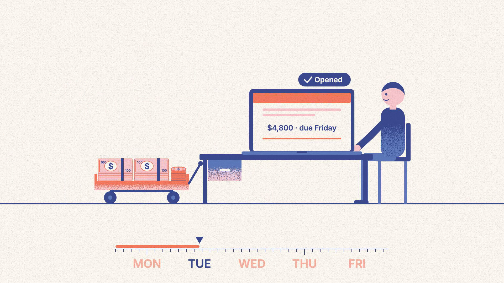
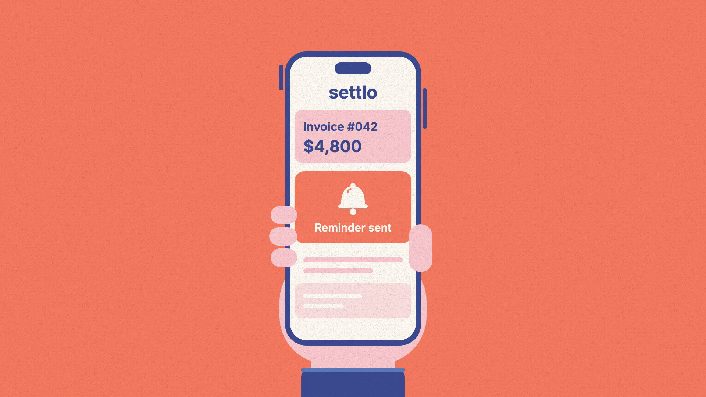
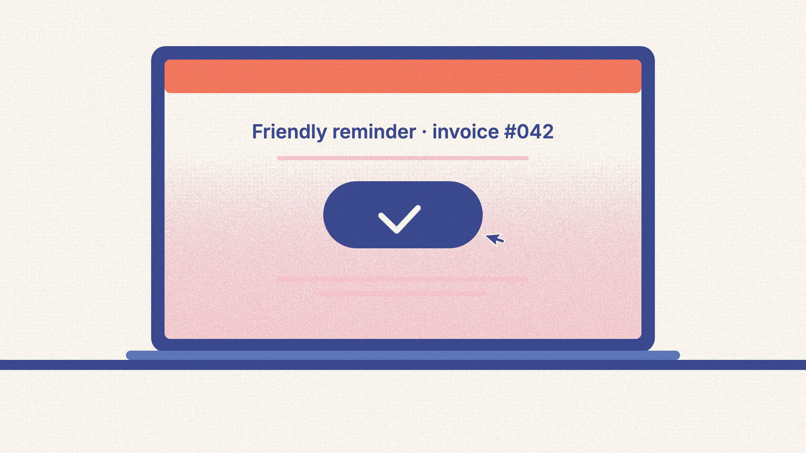
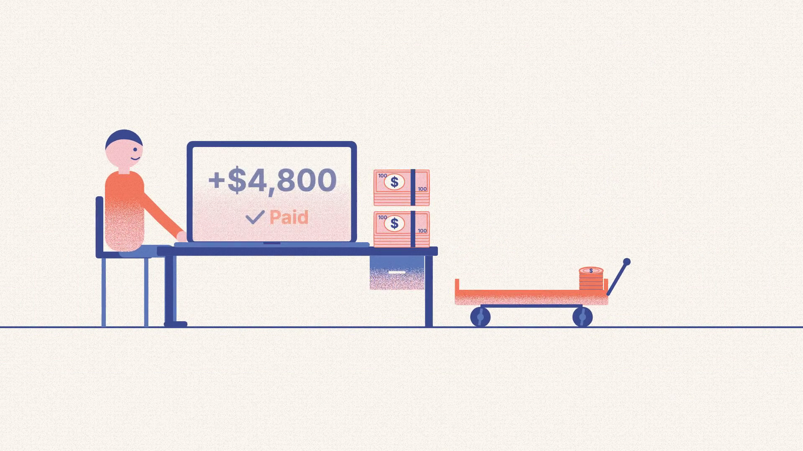
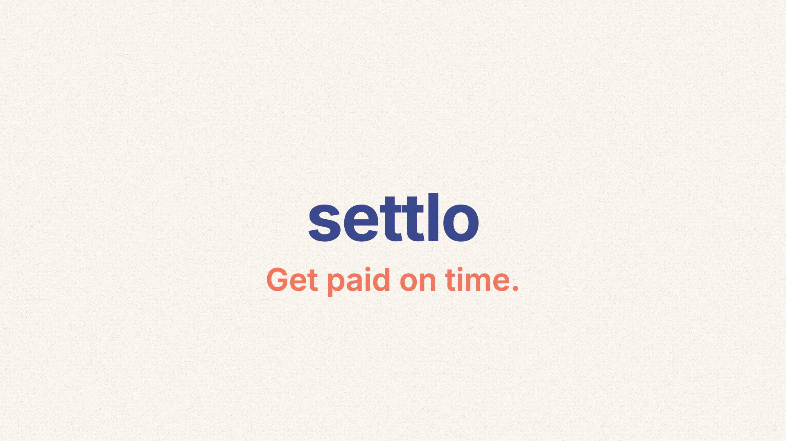
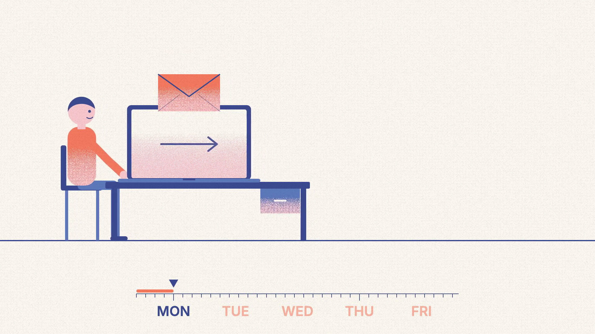
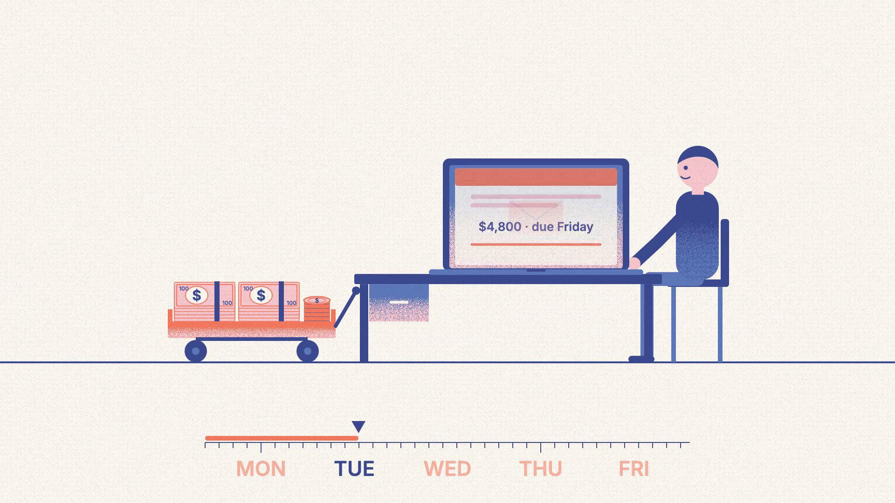
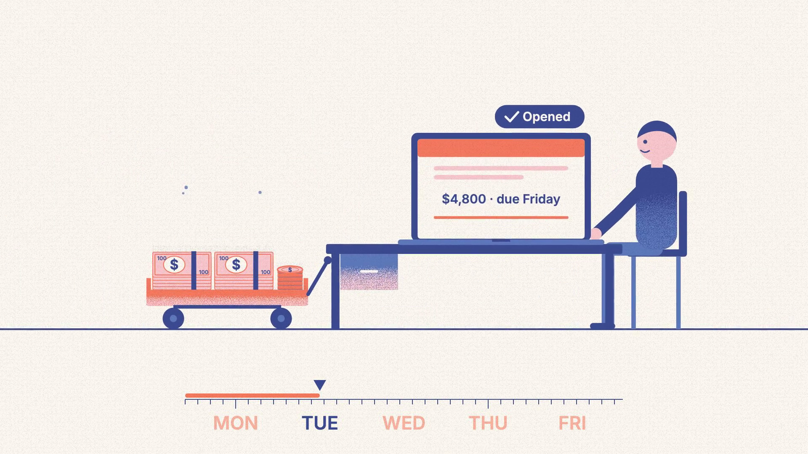
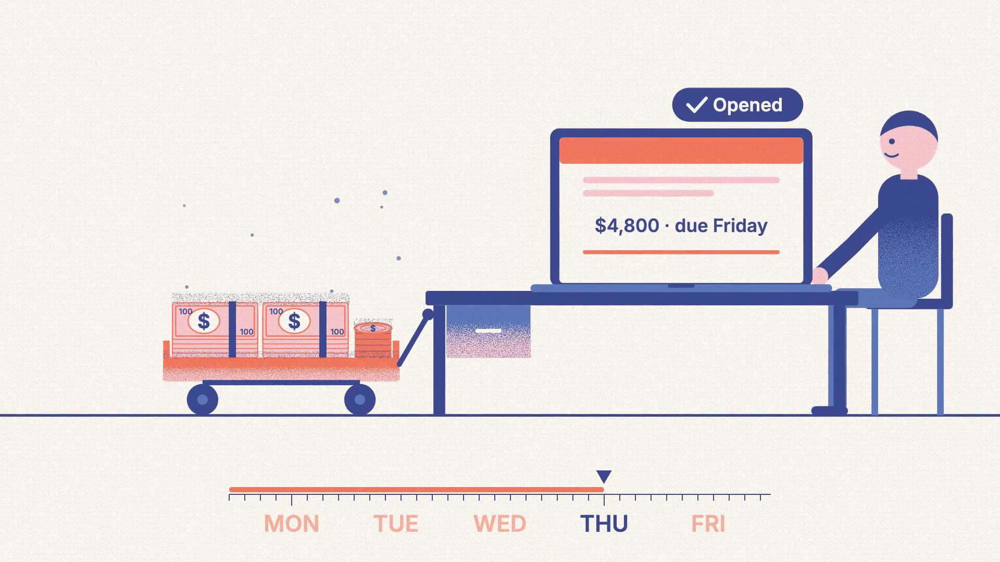

Model karakter berbahan matte clay kuning cerah dengan noodle limbs tanpa sendi kaku. Memiliki 4 pose ekspresi: bersiul santai, kaget bug-eyed, falling ragdoll, dan bingung.
Karakter kacang merah mini dengan ekspresi garang/panik yang melompat di atas tombol darurat di dalam otak. Membawa palu/kaki berat untuk memukul tombol.

Balok emas/amber padat yang jatuh membentur trotoar saat kopi melayang. Menegaskan durasi 3 detik saat otak mengalami pembekuan waktu.

Struktur menara uji coba David Eagleman dengan mistar vertikal pengukur ketinggian neon dan sangkar berisi 23 relawan berhelm oranye.
Balok stempel raksasa stensil "0" yang menghantam jam kronometer di meja kayu, menghancurkan kaca display LED menjadi kepingan partikel.
Konsol tombol darurat industri merah besar dengan pegas per, disertai jarum meteran mekanis yang berayun cepat ke indikator "+80% DATA".
Perbandingan visual fisik antara pita rekaman normal (pendek) vs rekaman amigdala (gulungan raksasa yang tumpah ruah meluap ke lantai).
Cangkir keramik putih melayang terbalik dengan cairan kopi gelap kental yang membeku menjadi bola-bola kaca di ruang hampa waktu.
Visual di video referensi dibuat dengan Two-Tone Cel Shading dipadukan dengan Sobel Edge / Normal-Depth Inking. Ini memberikan tampilan seperti buku komik / miniatur tanah liat (*tactile clay diorama*) yang solid dan bersih tanpa gradien murahan.
| Detik | Kata Kunci Narasi | Aksi Visual / Benturan Fisik | Sound FX |
|---|---|---|---|
| 0.0s – 2.5s | "Kamu terpeleset di lantai licin..." | Sepatu berseluncur, tubuh condong ke belakang | Whoosh selip es |
| 2.5s – 5.0s | "...semesta mendadak BERHENTI!" | Mata BLINK ke bug-eyed, cangkir & tetesan kopi membeku | Sub-bass drop & clock freeze |
| 5.0s – 7.2s | "...tiga detik penuh..." | Balok 3D "3s" jatuh menghantam trotoar | Heavy thud & dust puff |
| 7.2s – 15.5s | "Uji terjun bebas 90 kaki, 23 relawan..." | Whip pan ke atas, menara 90 FT meluncurkan kurungan | Wind rush turbulensi |
| 15.5s – 23.0s | "Mereka melihat NOL ekstra angka." | Stempel merah "0" menghancurkan jam kronometer LED | Shatter smash & impact ring |
| 23.0s – 35.0s | "Amigdala menekan tombol darurat..." | Mini amigdala meloncat di tombol merah, dial naik +80% | Alarm siren & button click |
| 35.0s – 44.0s | "...mengira kejadian 1 detik berlangsung 5 detik!" | Pita film 35mm menggunung, balok "5X LONGER" jatuh | Projector motor purr |
| 44.0s – 50.0s | "Jadi, waktu tidak pernah benar-benar melambat..." | Dunia membeku sesaat lalu bergerak lagi, tokoh tersenyum | Resolve musik → masuk CTA |